8 Sales and Marketing Applications
Objective 1 | 40 Questions
Which objects are Sales objects?
- Leads, Campaigns, Opportunities, and Orders
Leads, Campaigns, Opportunities, and Orders are sales objects.
Case, Entitlements, Service Contracts and Knowledge are support objects.
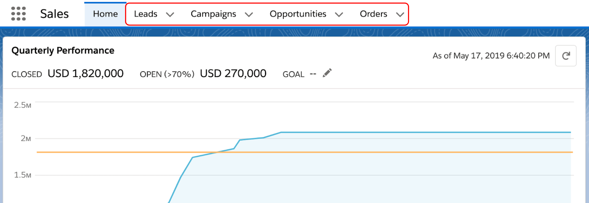
Which of the following are true regarding Web-to-Lead?
Data entered in the web form is validated before a record is created in the Salesforce org.
Standard and custom fields that need to be captured online can be selected.
The default lead creator for web-generated leads can be specified.
Salesforce runs validation rules before the data entered into the web form is created as a record in the Salesforce org. Assignment rules can be used to assign leads to different users. If assignment rules are not used or do not locate an owner, the lead will be assigned to the default lead creator.
The maximum number of leads that can be captured per day is 500. Using reCAPTCHA can reduce the number of spam entries that otherwise would have gone through.
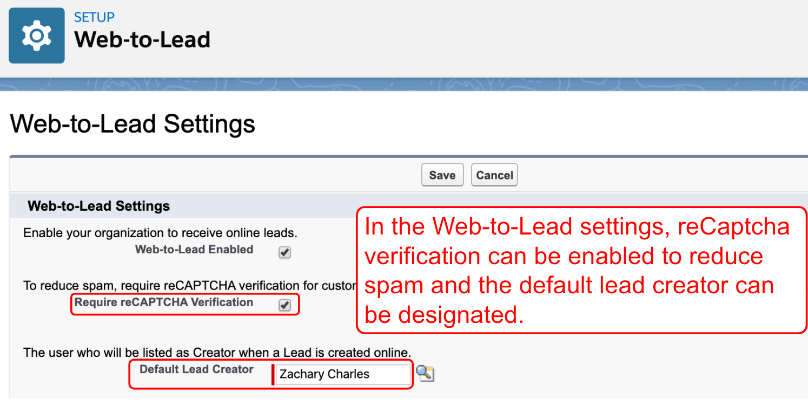
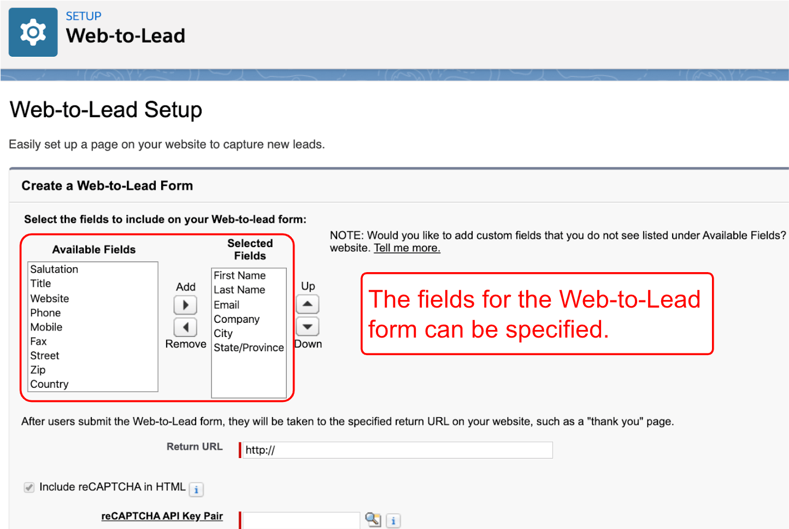
8.1 Product
Cosmic Enterprises will be adding a new product that will be delivered once ordered but billed in quarterly installments for one year. How can this be reflected in Salesforce?
- Create a default revenue schedule for the product.
As the product is delivered at one time but the revenue will be received in installments, a revenue schedule that defines the revenue amounts and number of installments should be created.
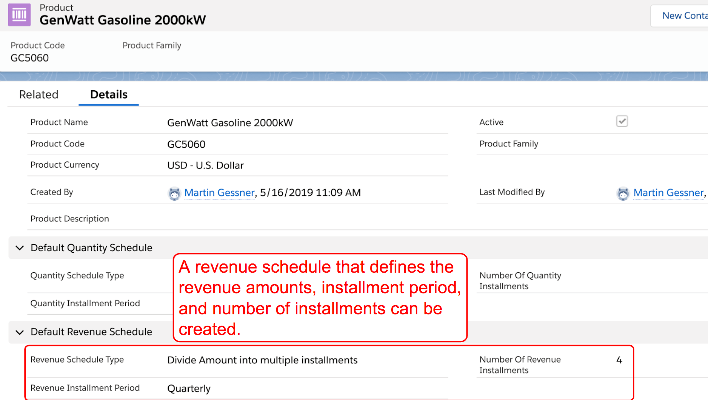
8.2 Price Books
How many standard price books can an organization have?
- 1
An organization can have only 1 standard price book. However, it can have multiple custom price books.
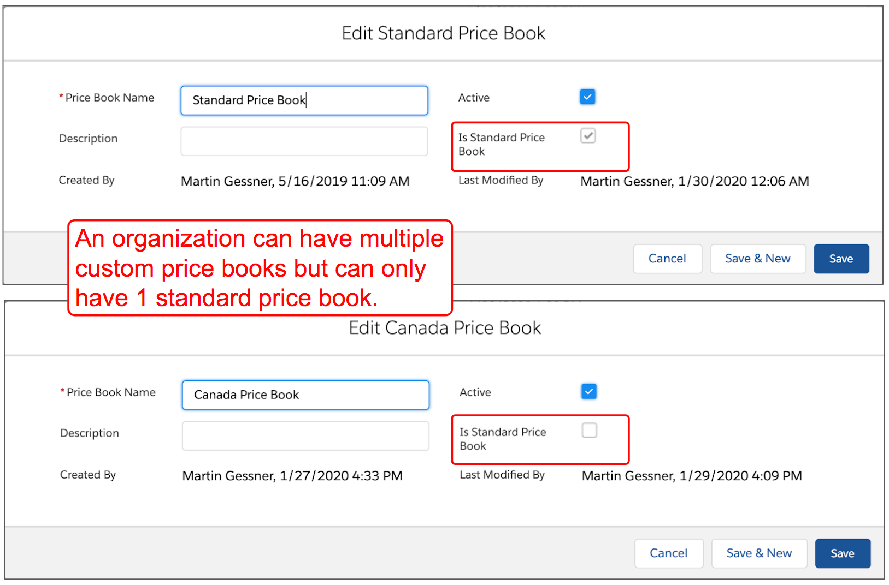
8.3 Sales Process
Jim is an administrator for Carly Automotive, a distributor of automotive spare parts. They have just launched a new line of truck parts. The sales process for these parts will be different from the process used for existing products. Managers also need to be able to view information related to the new opportunities on reports. What should Jim do to configure the opportunity object for this new product line?
- Create a new sales process and record type for truck parts.
Since the set of opportunity statuses for the truck parts line is new or different to the set used in existing sales processes, a new sales process should be defined. This does not affect the existing sales process and allows the statuses that apply to each sales process to be viewed on the appropriate record type.
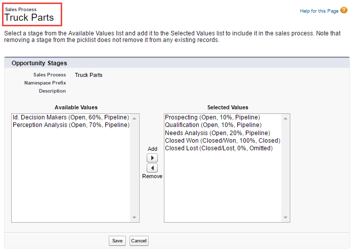
8.4 Opportunity | Teams and Splits
Sarah is the manager of a team of sales reps who collaborate on Opportunities. They are each awarded an appropriate share of the total sale on each Opportunity. Which of the following features should her company implement?
Opportunity Splits
Opportunity Teams
Opportunity Teams (Team Selling) allow defining a team that works together on opportunities. Opportunity Splits allow opportunity revenue to be split by percentage for each team member. Team members must be in the Opportunity Team in order to add them to Opportunity Splits.
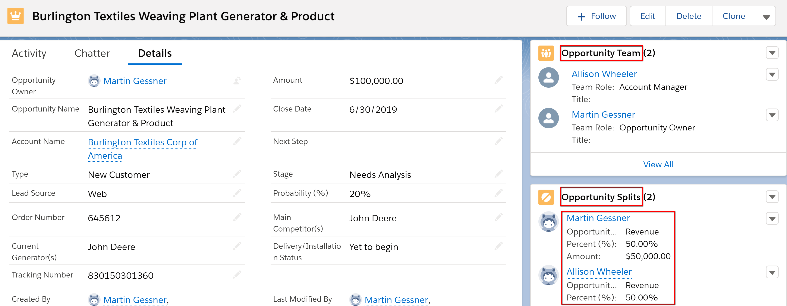
An organization wants to sell its products at different prices to different types of customers. How can this be set up?
- Create a price book for each customer type
Separate price books can be set up for different customer types. The price book can be selected when the Opportunity Products are added.
A flow would not be the best solution as it would apply the update to all products.
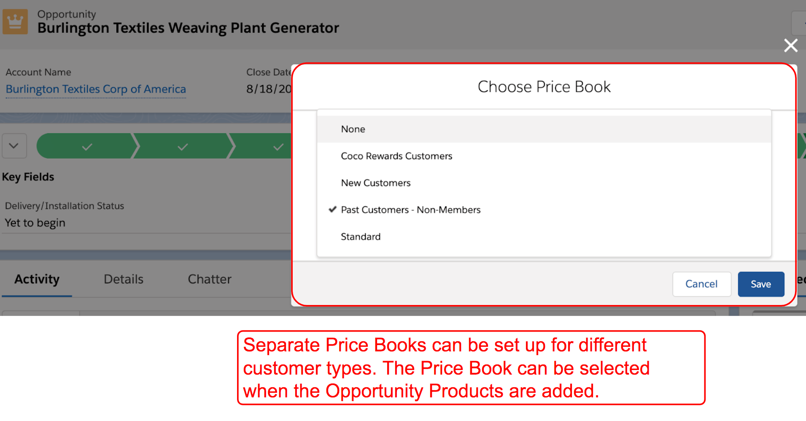
8.5 Reports
The Director of Sales wants a report that shows the Opportunity pipeline for the current and succeeding fiscal quarters. This report should be grouped by Sales Rep and Opportunity Stage. Which report format would be best to use to create this custom report?
- Matrix Report
A matrix report can be created and the ‘Stage’ and ‘Opportunity Owner’ fields used in column and row grouping respectively. ‘Fiscal Period’ can be used in either row or column grouping to show information by each fiscal quarter. A Matrix Report is ideal when you need to group data by rows and columns.
A Summary Report only groups data in a single dimension (e.g., by Sales Rep or Opportunity Stage) but not both simultaneously. A Tabular Report only displays data in a simple list without any grouping and a Joined Report combines data from multiple report types but is unnecessary for this requirement.
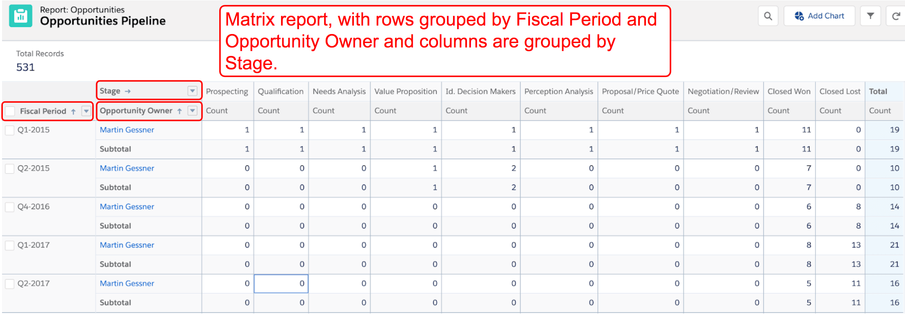
8.6 Lead Conversion
Which of the following are true regarding the Lead Conversion process?
An Account is created if one with the same name is not found and selected.
A Contact is created if one with the same name is not found and selected.
If Person Accounts are enabled and the Company field does not have a value, a person account will be created.
An Account or Contact is created from lead conversion if there are no other records with the same name.
Creating an Opportunity on Lead conversion is optional. Custom Lead fields can only be inserted into custom fields on the Account, Contact or Opportunity.
If Person Accounts are enabled and a value is not entered into the Company field, the lead is converted to a person account.
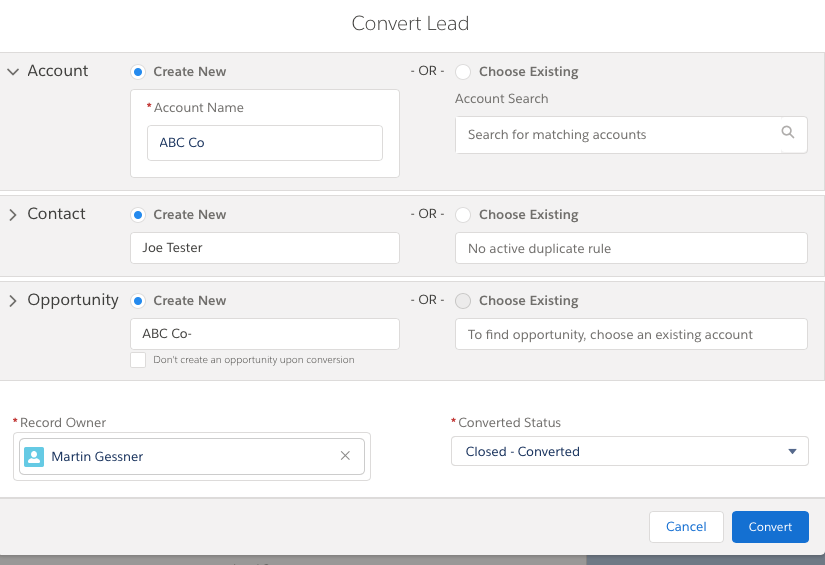
8.7 Order
Next Treks is using the Orders functionality in Salesforce to track products purchased. One customer has requested to return products previously purchased as they are defective. How can this be tracked in Salesforce?
- Create a reduction order and add one order product with the original quantity.
Reduction orders allow tracking of product returns and relating the return to the original order. They can be enabled in ‘Order Settings’ in Setup.
Reduction orders are created on the detail page of the order. After creating a reduction order, it is necessary to indicate which products should be reduced as well as the corresponding quantities.
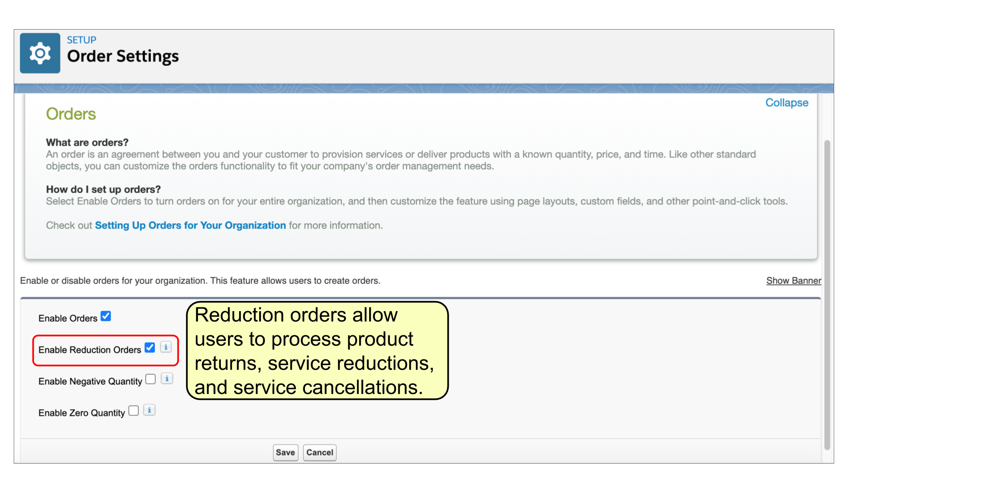
8.8 Assistant
The sales reps of Cosmic Solutions would like to view certain important updates about their leads and opportunities in Salesforce as soon as they log in and over the course of the day. These updates should include overdue opportunities, leads assigned to them on the current day, and opportunities with no activity in 30 days. Which standard Lightning component can the company’s administrator add to the Home Page assigned to the sales reps for this requirement?
- Assistant
The ‘Assistant’ can be added to the Home page in Lightning Experience to show important updates about leads and opportunities over the course of the day. It shows the following updates:
1) Leads assigned to the current user today
2) Opportunities with overdue tasks
3) Opportunities with no activity in 30 days
4) Opportunities with no open activity
5) Overdue opportunities
The ‘Recent Items’ component displays a set of recently viewed records. The ‘Today’s Events’ component displays the user’s next five events scheduled today and a link to the user’s calendar. There is no component called ‘Today’s Updates’.
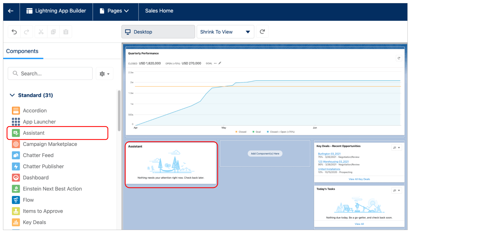
8.9 Forecast
The Salesforce Administrator of Cosmic Fitness Solutions has activated a forecast type based on the ‘Amount’ and ‘Close Date’ fields on the Opportunity object. One of the sales managers has been assigned as a forecast manager. She would like to share the forecasts she can view on the Forecasts page in Lightning Experience with another sales manager. What should the Salesforce Administrator recommend for this use case?
- Use the ‘Share’ button on the Forecasts page to share the forecasts.
Forecast managers in a role-based forecasts hierarchy can share their forecasts page with any Salesforce user using the ‘Share’ button on the page. The access level of ‘View Only’, or ‘View and Edit’ can be selected while sharing the forecasts. Users with ‘View and Edit’ access can make adjustments.
It is not possible to export forecasts using a link on the Forecasts page. Building a Forecasts page is not necessary for the purpose of sharing forecasts. There is no ‘Subscribe’ feature for forecasts.
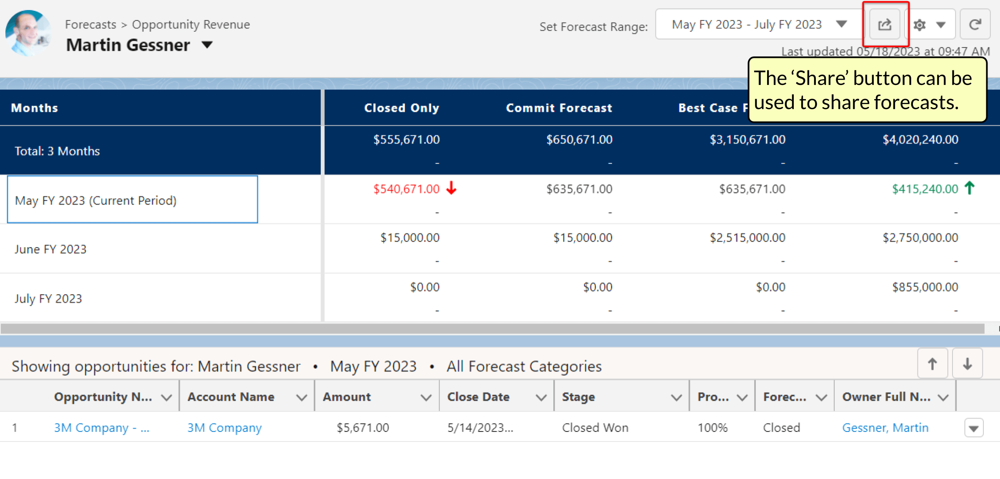
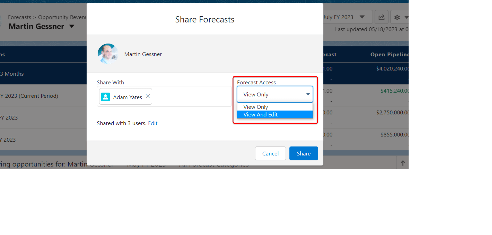
The Sales Managers at Cosmic Computing want to view Opportunities with an annual recurring revenue of more than 100,000 on their Forecasts page. ‘Annual Recurring Revenue’ is an Opportunity custom currency field. Furthermore, they want to calculate the gap-to-quota value and view it within the Forecasts page. How can this be accomplished?
Add a new forecast filter within the forecast type.
Create a new caulculated forecast column via Forecasts Settings.
8.10 Territory
Cosmic Repair Solutions has set up Sales Territories in their Salesforce org. The Sales Director of the company would like to allow sales representatives to view the sales forecasts for the territories to which they are assigned. Which forecast types should be used for this requirement?
Opportunity Revenue by Territory
Opportunity Quantity by Territory
Sales Territories can be used with Pipeline Forecasting. Opportunity Revenue by Territory and Opportunity Quantity by Territory forecast types can be added to enable territory forecasts and allow sales users to view opportunity revenue forecasts and opportunity quantity forecasts by territory. Up to 4 forecast types can be active in Forecast Types.
The Opportunity Revenue forecast type allows forecasts to be based on the fields ‘Amount’, ‘Close Date’, and any custom date field on the Opportunity object.
Note: In Summer ’24, Enterprise Territory Management has been renamed to Sales Territories. Users can manage territories as they previously did with Enterprise Territory Management under the name Sales Territories.
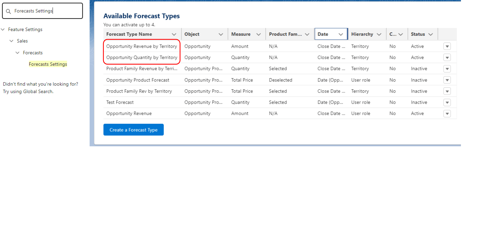
8.11 Sales Process
Which are true regarding how Salesforce supports the sales process?
Salesforce features include leads, campaigns, products, price books, opportunities, and quotes.
Salesforce supports selling different products or services with different processes.
Opportunity Teams can be used to allow a group of people working on a deal to be associated with an opportunity.
Contact Roles for opportunities track which contacts are related to the opportunity and the role they play. Contacts from other accounts can be linked to the opportunity using contact roles. It is a Customizable Campaign Influence and not Team Selling that is used to attribute a percentage of success to influential campaigns. Team Selling is a feature that allows members of an Opportunity team to work on a deal together and split generated commissions or revenue.
Salesforce standard objects which include Leads, Campaigns, Products, Price Books, Opportunities, and Quotes support different aspects of the sales process as a default. Different sales processes specific to the organization can also be configured for various types of products, product lines, or services. Lastly, the Opportunity Team can be configured to add multiple users to an Opportunity wherein each member of the team can be assigned roles and special access.
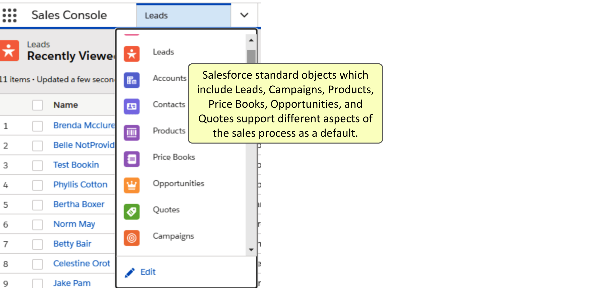
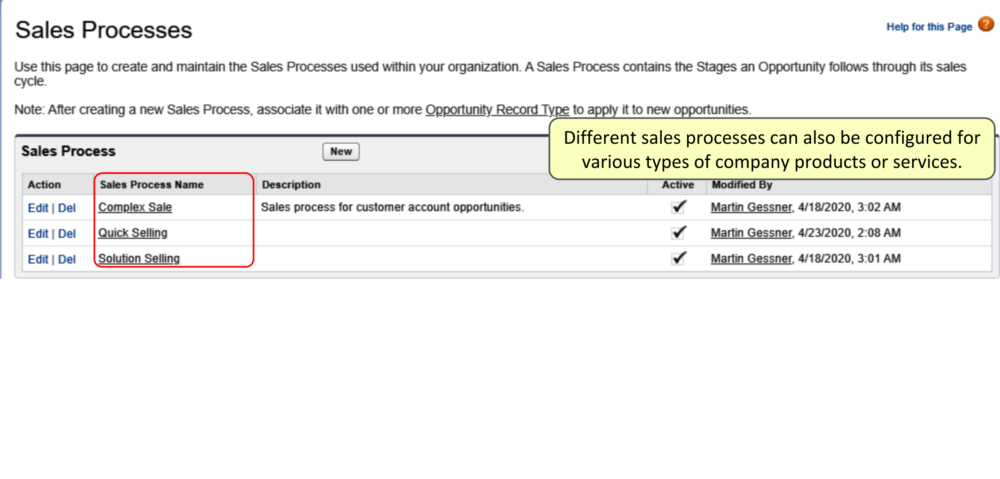
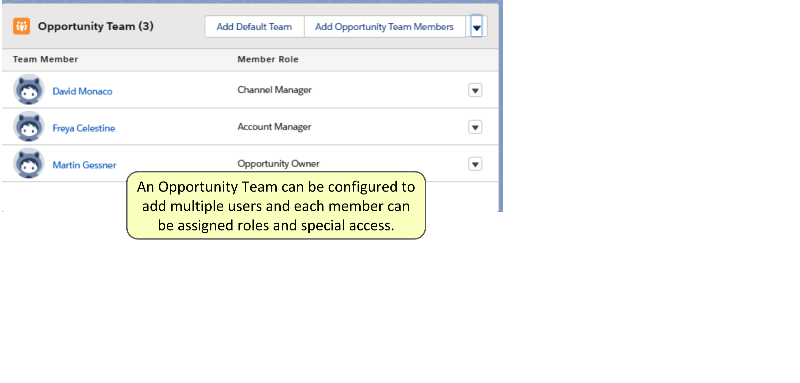
8.12 Macros
A Sales Cloud consultant has set up a console app in Lightning Experience to improve the productivity of sales reps in the organization. Which of the following should be considered for creating and running macros in the app to further improve the productivity of sales reps?
Macro Builder is used to craete macros in Lightning Experience.
Individual macros cannot be run on list views.
Standard objects, except ‘Campaign’, and custom objects that allow quick actions and have a customizable page layout support macros. In Lightning Experience, Macro Builder is a point-and-click tool that is used to create macros.
It is not possible to run individual macros on list views. Macro instructions allow using email templates and adding email attachments.
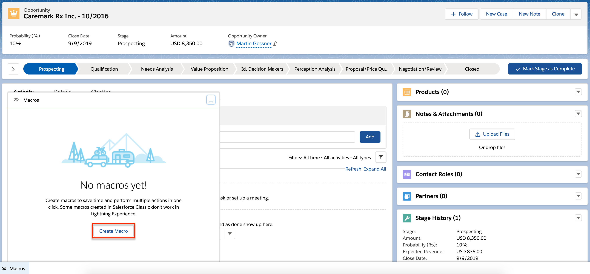
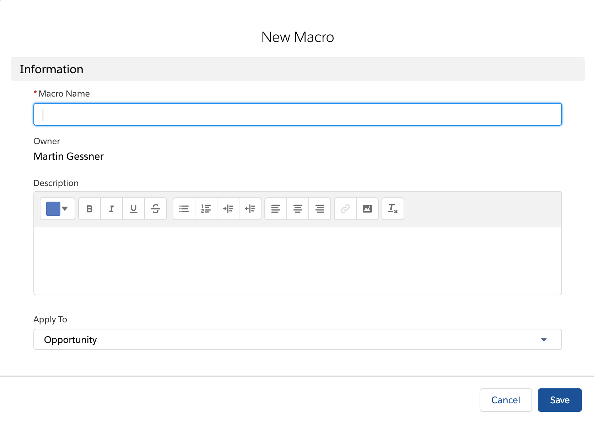
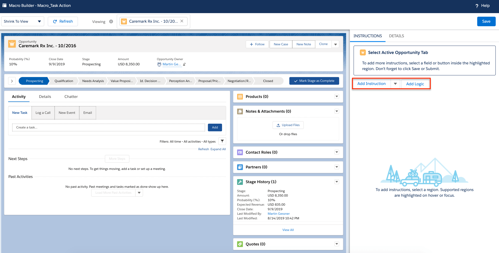
8.13 Product
Cosmic Enterprises will be adding a new product that will be delivered once ordered but billed in quarterly installments for one year. How can this be reflected in Salesforce?
- Create a default revenue schedule for the product.
As the product is delivered at one time but the revenue will be received in installments, a revenue schedule that defines the revenue amounts and number of installments should be created.
A sales manager contacted the Salesforce Administrator with an issue that he is not able to add a product to an opportunity. What does the Salesforce Administrator need to check?
The product has been added to a price book in the currency of the opportunity, and the price book entry is active.
The product is active.
The product has a standard price entry in the currency of the opportunity.
The ‘Active’ checkbox should be selected to ensure that a product is active before it can be added to an opportunity. Products need a standard price before they can be added to a price book, which leads to a price book entry creation. For multi-currency orgs, the opportunity Currency is tied to the currency of the associated price book entry. If there is an existing opportunity line item, the currency of the product line item to be inserted should be in conjunction with the opportunity currency. The sales price is specified for a product that is added to an opportunity or quote.
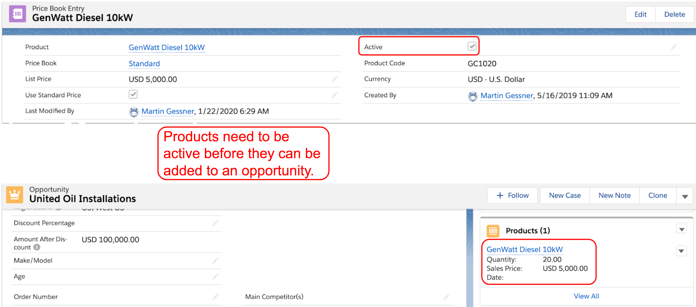
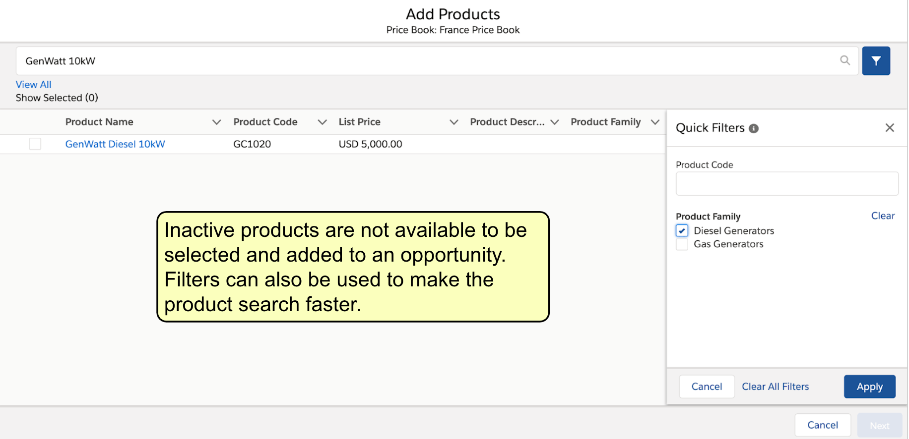
Galactic Sweepers offers a weekly office cleaning service that is invoiced monthly. What should be created to represent this?
- A default Quantity and Revenue Schedule
A Revenue and Quantity Schedule is suitable if the customers receive their order on a delivery schedule and also pay for the products using a payment schedule.
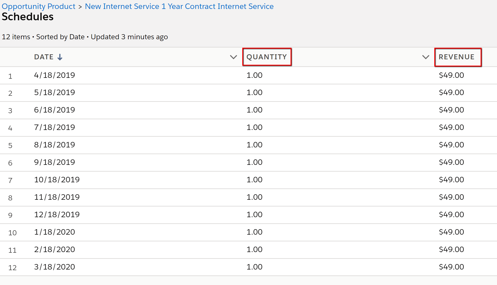
8.14 Account
A sales representative is currently working on an account and would like to collaborate with two other sales representatives and a partner user. These users should be able to view and edit the account for a limited period of time. What is a possible solution for this requirement?
Share the account with the users using the ‘Sharing’ button.
Add and remove users to the account team from the ‘Account Team’ related list.
Internal and partner users can be added to an account team in Lightning Experience. From the ‘Account Team’ related list on an account, either a team member or a default account team can be added. Team members can be given ‘Read/Write’ access to an account. The related list must be added to the account page layout by an administrator to use this functionality.
The ‘Sharing’ button can also be used to share a record with other users, groups, roles, and territories. A sharing rule is used to grant record access to users in groups, roles, and territories. A permission set can be used to grant additional access to objects, but it cannot be used to grant access to specific records of an object.
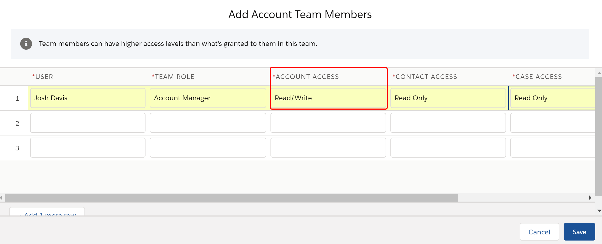
8.15 Lead
8.15.1 Einstein Lead Scoring
With Einstein Lead Scoring, leads can be scored separately according to their segments. Since lead and conversion history can be evaluated based on the associated marketing or advertising campaign, it will be easier to determine which campaigns prove to be more successful.
Einstein Activity Capture is used to connect email and calendar applications to the Salesforce org and helps reduce data entry work done by agents. Einstein Opportunity Insights evaluates opportunities and gives modeled predictions about the likelihood to close them based on data from previously closed opportunities. Campaign hierarchy is used to organize and link individual marketing campaigns together through parent and child relationships.
- Einstein Lead Scoring.
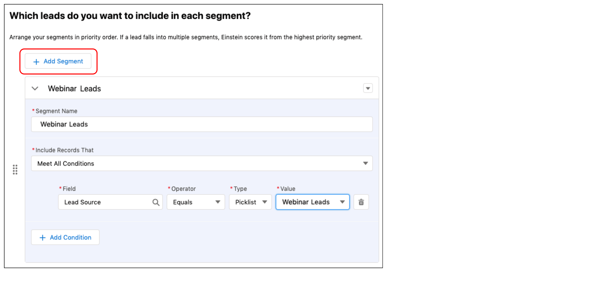
8.17 Pipeline Inspection
The Sales Managers at Costa Gears are taking a more proactive role in managing the opportunity pipeline.
The Sales Cloud Consultant recommended that they utilize Pipeline Inspection. Which of the following capabilities are features of Pipeline Inspection?
Tiered Einstein opportunity scores are displayed along with key factors and score changes.
Filters can be applied to narrow the view by criteria or to help identify areas of concern.
Key performance indicators for sales pipelines are displayed as metrics at the top of the page.
Pipeline Inspection is available as part of the Sales Cloud license at no extra cost with Enterprise, Performance, and Unlimited editions. It provides sales managers with better visibility of their pipeline by providing information on key metrics (based on the available number and currency fields), opportunities, and weekly changes. Metrics such as new opportunities created, increases or decreases in amounts, and overdue opportunities, can be displayed for the sales teams.
Pipeline views can be created using different filters to help identify areas of concern. Pipeline Inspection users who have the ‘Revenue Intelligence User’ or the ‘Revenue Intelligence Admin’ permission set can see the changes to opportunities in different forecast categories over time from the ‘Flow’ tab. Inline editing of these fields is no longer possible, aligning the list view behavior with the Opportunity page layout configuration. However, field-level security settings continue to take precedence, overriding the Opportunity page layout settings if necessary.
Einstein Deal Insights, powered by Einstein’s machine learning capability, predicts the opportunities unlikely to be won in the current month. Lastly, Einstein Conversation Insights and Email Insights are also features of Pipeline Inspection. Einstein Conversation Insights and Email Insights provide sales agents with the information they need to analyze all customer interactions to track deals. These functionalities encompass suggested actions, such as reviewing call and email logs, producing call summaries for voice and video calls, and generating editable summaries to incorporate future actions and client input.
8.18 Dynamic Highlights Panel
Cosmic Beans handles several types of accounts that range from individual to corporate consumers of their world-class coffee beans. The Dynamic Highlights Panel component has been added to the Account record page. How will this configuration impact the sales team when viewing an account?
- Sales users may see different sets of fields displayed on the Dynamic Highlights Panel depending on the account.
The Dynamic Highlights Panel component is an advanced alternative to the traditional Highlights Panel component in Lightning App Builder. While the Highlights Panel supports up to 7 fields only, the Dynamic Highlights Panel can display up to 12 fields. Unlike the fields in the Highlights Panel that are static, the fields in the Dynamic Highlights Panel support field visibility and can be displayed conditionally based on field values, device, or other criteria. While fields in the Highlights Panel are configured via the compact layout, fields in the Dynamic Highlights Panel are configured directly in Lightning App Builder.
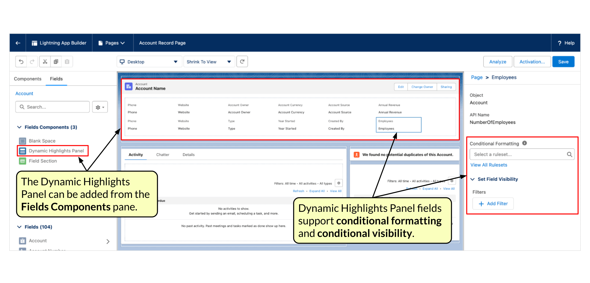